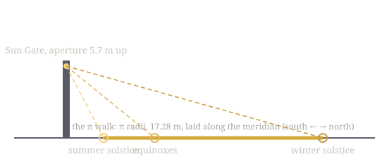

Build the best oversized and the best undersized constructions full size, side by side. The perfect result lies between them.
The Idea
No straightedge and compass construction reaches the exact answer. But the charts hold the best construction that lands over the true value, and the best that lands under it, so the exact answer must lie between the two.
So build both: a real building, monument or landscape with the two best constructions laid out full size as a pair of lines. Walk one, then the other. In the gap between them lies the perfect result no construction can reach. The building makes the impossibility visible, and honours every attempt that narrowed the gap.
The gap can be built two ways, as two visions below: wide enough to walk between, or narrow enough only to see, as a seam in the paving.
An idea of Edward James Gordon's from early in this project, first talked through with an AI assistant and recorded here.
Vision I: A Gap You Can Walk
The two lines stand about 1.2 m apart where they end, a path wide enough to walk down. Visitors walk the oversized line, then the undersized one, and stand in the space between: the place where the perfect result lies. To keep the gap that wide at a building's size, it uses constructions chosen to be built, around 98% to 99.6%, rather than the best on the charts.
Rectifying the circle: a circular plaza, and beside it two straight walkways from a common threshold, as long as an oversized and an undersized construction of its circumference. A marker stands in the gap where they end.
Squaring the circle: a circular garden and, nested, an oversized and an undersized square court of equal area. The true square's outline runs along the path between their walls.
Doubling the cube: a cube pavilion beside two larger frames at an oversized and an undersized doubled edge, far enough apart to walk between.
Trisecting an angle: a fan-shaped plaza, its angle set into the paving and divided by constructions as paths from the vertex. At the plaza's edge the oversized and undersized paths have drawn apart, with the true third between them.
Arc rectification: an arched walkway, and beside it the straight paths that match its length from either side, ending a step apart.
Edward's 99.596% and 99.376% rectifications already make one, from a plaza 37 m across. The architecture search below finds more.
Vision II: A Gap You Can See
The lines do not need to be walked between, only walked along, with the gap between them in view. Here the gap is a seam: a pencil's width, or the joint where two paving slabs meet, filled with poured gold. This vision can carry the best constructions on the charts.
Rectifying the circle: the two walkways from the threshold end at a single joint in the paving, filled with gold. The oversized line ends at one edge of the joint, the undersized at the other, and the true circumference lies in the gold.
Squaring the circle: the oversized and undersized courts share their walls' outline, separated by a gold seam around the square. The true square runs inside the gold.
Doubling the cube: the two frames meet along a gold-filled joint at their edges, where the cube of exactly twice the volume lies.
Trisecting an angle: the best oversized and undersized paths from the vertex run together across the plaza, a gold seam between them that widens only towards the edge.
Arc rectification: the straight paths end at a gold joint beside the arch's end.
The seam can be built two ways:
At true scale. The joint is exactly as wide as the gap. A pair is chosen and the work is sized so the gap comes out a pencil's width (about 0.5 mm) or a paving joint (about 5 mm). It needs modern survey and stone cutting: at that width, rope and stake work wander more than the gap.
As a symbol. The best two lines end at a gold joint wider than their gap, so both ends, and the perfect result between them, lie somewhere inside the gold. It works at any size, with ordinary building accuracy. A plaque gives the gap's true width, which for the best constructions is counted in gold atoms.
All Of Them At Once: Design Attempts
A single building for every chart: the best approximations, oversized and undersized, for squaring the circle, rectifying it (and so π), rectifying an arc and doubling the cube, with the trisection shown in the one place a straightedge and compass can do it exactly. Every step is a line in the floor. Each attempt at the design is kept here, so the ideas can be compared as they change.
Attempt #5: The Digital Outer Shell
Not a construction. 5° cannot be drawn with straightedge and compass: among whole degrees, only multiples of 3° can. The outer shell in this attempt is not an approximation, and it does not claim to construct 5°. Its marks are placed by measurement, as a surveyor or a computer would place them, and nothing on the floor draws them. It is there on purpose, as a symbol: the digital world round the classical one, what can be calculated but not constructed.
Inside it, everything is Attempt #4 unchanged: every step a line in the floor, every pillar and gate an exact trisection. Beyond the gates, on a ring 13.5 m from the origin, stand 72 low studs every 5°, 1.18 m apart, in a material of their own (shown in cyan), with no construction lines. The ring they stand on is not drawn by the compass either: it is a line of the survey, shown dashed in the plan. Read from outside in, the monument goes from the measured to the constructed, and at its centre to what neither can reach exactly.
North is up. Every step in the metal of its problem, the results in gold. The cyan studs are surveyed, not constructed.
Drawing The Floor, Then Raising It
The floor is drawn step by step as in Attempt #4. The last floor step is not a step at all: it sets the digital shell, marked "not a construction". Then the building rises in three dimensions: drag to turn it, and scroll or pinch to zoom.
The GeoGebra file is Attempt #4's, Architecture/Plan/attempt-4.ggb, unchanged: the digital shell has no construction to record.
Attempt #4: Gates On The Outer Ring
Attempt #3, with two more exact trisections charted on its outer ring. 15° is a third of 45°, and 7.5° a third of 22.5°, and both of those can be drawn exactly, so these are true trisections too. Rings of their own would stand only a metre or so apart, too close to read, so they are marked on the outer ring alone, 12 m from the origin: a gate every 15°, 3.1 m apart, and a low post halfway between each pair, every 7.5°. The ring's three pillars stand in place of three of the gates. The gates could be guides, thresholds or turnstiles into the monument; for now they are a pair of posts with a bronze bar, 1 m high, under the cone.
The new directions cost 19 lines and no circles: lines from the origin through the midpoints between neighbouring clock points give every 15° (the cube's corners already lie on the 45° and 135° lines), and lines through the midpoints between those give every 7.5°. That makes 31 circles and 30 lines in all. The lines run right through the origin, so the bronze becomes a sunburst across the whole floor: that, more than the gates, is what this attempt tests.
Attempt #2, with every exact trisection carried all the way round the monument. Four trisections can be done exactly with straightedge and compass, and the clock already marks them all: 90° into 30°, 180° into 60°, 270° into 90° and 360° into 120°. Here each has its own ring about the origin, repeating its division the whole way round: pillars every 30° on the clock itself, every 60° on a ring at two radii, every 90° at three radii and every 120° at four.
The pillars step down ring by ring, shorter and slimmer the further out they stand, so that their tops lie on one cone, 6 m high over the origin and meeting the ground 15 m out: 4.8 m on the clock, then 3.6 m, 2.4 m and 1.2 m. The cubes, the gnomon and everything else stand inside it.
Every step is a line in the floor, inlaid in the metal of the problem it belongs to: bronze for the clock and the trisection rings, silver for squaring the circle, copper for π, blued steel for the arc and patinated bronze for doubling the cube. Gold is kept for the results. A line two problems share is laid once, in the metal of the one that drew it first, so the clock's bronze runs under all of them.
The rings cost 5 circles and 1 line more than Attempt #2: a circle about O for each new ring, two circles to find the radii of the third and fourth, and the line from four to ten o'clock for the 120° divisions. The rest are the clock's own lines. That makes 31 circles and 11 lines in all, with the same eight gold results. The site is 40 m × 31 m.
North is up. Every step is inlaid in the metal of its problem, and the results in gold. The π lines pass the pillars at one, two and three radii, and end just beyond the third.
Drawing The Floor, Then Raising It
Step through the floor as it is drawn, or play it. The last step stands the building up in three dimensions, with the cone that bounds the pillars drawn faintly: drag to turn it, and scroll or pinch to zoom.
The GeoGebra file: Architecture/Plan/attempt-3.ggb. It is Attempt #2's file with the rings added, so the eight results keep the accuracies given under Attempt #2.
The Rings
The clock, 3 m out: 90° into 30°. Twelve pillars, 4.8 m high, on the clock's twelve points. Four of them stand on the quarter arc, at three, one, two and twelve o'clock, and replace Attempt #2's colonnade.
The second ring, 6 m out: 180° into 60°. Six pillars, 3.6 m high, at one, three, five, seven, nine and eleven o'clock.
The third ring, 9 m out: 270° into 90°. Four pillars, 2.4 m high, at three, six, nine and twelve o'clock, on the two diameters.
The fourth ring, 12 m out: 360° into 120°. Three pillars, 1.2 m high, at three, seven and eleven o'clock.
Every ring's pillars lie on lines through the origin that the clock has already drawn, except the 120° and 300° directions, which need the one extra line. The pillars due west stand on the π lines at one, two and three radii, like milestones, and π itself ends 0.42 m beyond the third.
Attempt #2: One Origin
Everything grows from one point: the origin O, the first point placed on the ground and the centre of the first circle. Each problem is drawn twice about it, once oversized and once undersized, so the gap is a true gap: between two squares about the same centre, two cubes standing on the same spot, or two lines drawn from the same point, one on top of the other. The perfect answer lies in the space between each pair.
The constructions were chosen by the fewest steps first and accuracy last. A result is carried to O with the compass: one circle about O with the result's length meets the two diameters, and the midpoints between neighbouring crossings are the corners of a square of that side centred on O. A length is laid from O along a diameter. Midpoints and crossings are not counted as steps.
The whole floor is 26 circles and 10 lines, with the eight results in gold: four gold lines and four gold squares. Attempt #1 took 40 circles and 37 lines. The site is 38 m × 31 m, with the clock 6 m across and the given cube 3 m high.
North is up. Grey: every step, laid in the floor. Gold: the results. The small stones on the rim are the sundial's hours.
Drawing The Floor, Then Raising It
Step through the floor as it is drawn, or play it. The last step stands the building up from the floor in three dimensions: drag to turn it, and scroll or pinch to zoom.
The cubes. The given cube stands on the origin, 3 m on each edge, its floor the square through the midpoints of the clock's four quarter chords: no extra step at all. Round it stand two open frames: Stifel's undersized double (1544, 97.656%), exactly 3.75 m, and Claude's oversized double (99.919%), 3.7808 m. The true doubled cube, 3.7798 m, lies between them, 1 mm inside the outer frame and 3 cm outside the inner one.
The squares of the circle. Two gold squares about the origin: Lakenmacher's oversized (1890, 99.99981%), 5.3174 m on a side and only 5 thousandths of a millimetre too long, and de Serres's undersized (1600, 95.49%), 5.196 m, the side of the triangle inscribed in the circle. The true square runs between them, almost on Lakenmacher's line.
π, the circle's length. Rectifying the circle and finding π are one problem: the circumference is 2π radii, so half of it is π radii. Two gold lines from the origin, laid west along the diameter one on top of the other, each half a circumference long: Claude's oversized (99.992%) and Claude's undersized (99.99995%). They run together for 9.42 m and end 0.71 mm apart, the true π radii between their ends.
The quarter arc. The arc of the clock from three to twelve o'clock is the arc to be straightened, with a colonnade standing on it. Two gold lines from the origin run north along the other diameter: Burmester's oversized (1919) and Rankine's undersized (1867), 99.59% and 99.41% on this arc. They end 4.7 cm apart, the arc's true length, 4.712 m, between them: walk the arc under the columns, then the straight back to the origin.
The trisection. The right angle under the quarter arc, between three and twelve o'clock, is paved apart and divided into exact thirds by two silver lines from the origin to one and two o'clock: the trisection where it is possible. The same twelve points of the clock trisect 180°, 270° and the full turn.
Suspended cubes. In the 3D view the cubes stand on their floors, or, with Suspend, hang on fine cables about the centre of the oversized frame, as in Edward's mockup: the gap between each cube and the next then runs round all six faces, 1.5 cm between the two doubles and 37.5 cm between the given cube and Stifel's.
The Sundial
The clock is also a sundial. A gold gnomon rises from the origin, pointing north at the angle of the latitude (50.9° for Southampton), at the celestial pole, through the glass of the given cube. Its shadow turns about the origin through the day and crosses hour stones on the rim. The stones are not at the clock's twelve points: on level ground the hours bunch towards noon, so each stone is set on its own hour line, worked out for the latitude rather than constructed.
Two of the hour lines fall on the gold. At noon the shadow runs north along the straightened arcs; at six in the morning, west along π.
Edward's Blender Mockup Of Attempt #2
A rough model made in Blender while Attempt #2 was being drawn, of the same idea: the two cubes, the two squares, two circles and a sundial marker, all about one origin. In it the smaller cube hangs inside the larger one, both about the same centre, so the gap between them runs round all six faces. Attempt #2's 3D view can show its cubes that way too, with the Suspend button.
A single building for every chart: the best approximations on the charts, oversized and undersized, for squaring the circle, rectifying it (and so π), rectifying an arc and doubling the cube, with the trisection shown in the one place a straightedge and compass can do it exactly. Every construction is drawn from the same few first lines, and each line or circle that two of them share is drawn once. The whole floor is 40 circles and 43 lines, each a brass line in the stone, with the eight results in gold: six gold lines and the two gold squares. It fits a site of 44 m × 48 m, with the central circle 11 m across.
North is up. Grey: every step of the eight constructions, laid in the floor. Gold: their results. The hatched band is the raised gallery, with a balcony facing each problem.
Drawing The Floor, Step By Step
The floor is one construction, built in order: first the clock, then each problem growing out of what is already drawn. Step through it, or play it.
The Clock Court. The circle of the plaza, 11 m across, with twelve brass points around its rim: the two diameters and four circles of the radius about their ends mark them. The diameters through them divide the right angle into exact thirds, and the same twelve points trisect 180°, 270° and the full turn: the trisection shown where it is possible, and nowhere else. The quarter of the court between twelve and three o'clock is paved apart, with its two trisecting lines.
The Square Court. The square of the circle's area, 9.75 m on a side, set over the circle so that its corners stand just outside the rim, laid out from the two gold squares, which lie in the floor beside it where their constructions put them (Gregori's oversized, the archive's undersized). Their sides differ by 6.7 thousandths of a millimetre.
The π Meridian Walk. De Gelder's half circumference, π radii, 17.28 m, runs due north along the diameter from the rim, with a brass mark at every radius: three whole radii and the last 0.14159. The walk is also the meridian line (below).
The Tangent Of Arcs. On the tangent at the top of the circle, two arcs straightened side by side from one point: Ramanujan's sixth of the circle (1914), 5.76 m, short of the true length by 1.8 millionths of a millimetre, about six gold atoms; and the 150° arc, whose two gold lines, oversized and undersized, run together for 14.4 m and end 12 thousandths of a millimetre apart. A colonnade stands on the arc itself: walk the curve under the columns, then walk back along the straight, the same distance.
The Cube Pavilion. A cube room whose edge is the plaza's radius, 5.5 m, standing inside an open frame of the doubled edge, 6.93 m, so that you can walk between a cube and the cube of twice its volume. The two gold doubled edges lie in the floor where their constructions draw them.
The Sun Gate
The π walk is laid on the meridian, like the sun lines of San Petronio in Bologna and Saint-Sulpice in Paris. A slender gate stands across it 2.95 m south of the walk's southern end, with a small aperture 5.67 m above the floor (for the latitude of Southampton, 50.9° north). At noon on the summer solstice, the sun's spot through the aperture falls on the gold seam at the start of π; at the equinoxes it falls 6.98 m north of the gate; at noon on the winter solstice it reaches the far end of the walk, three radii and 0.14159 away. Each year the sun crosses the whole of π.

Other latitudes keep the same plan and move the aperture: 12.1 m high at 35°, 10.2 m at 40°, 8.1 m at 45°, 4.0 m at 55°, 2.2 m at 60°.
Seeing It, Far And Near
From above. A gallery 3 m wide runs round the site, raised about 4 m, with a balcony facing each problem: at the north end looking down the π walk, on the east over the clock and the square court, on the south over the court's southern half, and on the west over the tangent of arcs and the cube pavilion. The Sun Gate can carry a small platform at the height of its aperture.
Up close. The whole floor is walkable: every line is inlaid flush. At each gold seam a lens is set in a bronze plinth, with a plaque giving the true gap at this size, from 12 thousandths of a millimetre on the arc to six gold atoms on Ramanujan's line.
Three Sizes Of The Same Plan
A statue or table piece, about 1 m across. A bronze or stone disc with the plan engraved and the results inlaid in gold; the circle is 23 cm across and the smallest step about 1 cm. Machined to a hundredth of a millimetre, it is the most faithful version. Set it level and turned to the meridian, and a pin 12 cm high plays the Sun Gate.
A plaza, 44 m × 48 m. Stone with brass and gold inlay, laid out by modern survey to about a millimetre. Its smallest step is 0.45 m, easy to set out.
Old-world work. Every step can be laid with cords, stakes and a rope compass, as the rope-stretchers did, but rope work is true only to about one part in 5,000: the near-perfect results can be honoured in such a building, not shown. The gold seams are then symbolic, as in Vision II.
How the constructions were chosen: each candidate on the charts was laid onto the clock, turned or mirrored to share as many lines as possible, and measured for the lines it adds, how far it reaches and its smallest step. The set here keeps every result above 99.9998% while the whole floor stays inside 50 m. The measurements are in ARCHITECTURAL.md.
How Close The Lines Are Today
Worked out live from the charts. At the scale of a building, the best constructions are closer together than any builder can lay a line: for the circle, a few gold atoms apart. That is why the best pairs belong to Vision II, and Vision I uses pairs further apart.
How Big For Each Vision
The gap grows in step with the size of the work, so each pair needs its own size for a pencil line, a gold joint or a walkable path. Worked out live from the same pairs as above; the Earth is 12,742 km across.
Building It For Real
For the path between the two lines to be walkable, about 1.2 m, the best pair of people's constructions for the circle would have to be built on a plaza thousands of kilometres across. The better the construction, the larger the building, which is why the best pairs are left to Vision II.
Two kinds of accuracy. Every point of a built construction is staked out by hand. At ±5 mm a point on a 50 m plaza, constructions above about 99.6% (circle's length) or 99.8% (squares) wander further than they are from perfect, so their accuracy only shows in the drawing. Below that, with no micro scale steps, the built version still shows it.
Would it fit on the Earth? With every circle and line inlaid in the floor, the Architectural Plan's own two lines, Kochański's end and Edward's, show a pencil's width of gap on a plaza 50 m across and room to stand on one 4 km across. The 3/7 crossover does not fit: room to stand between it and perfection needs walkways a third of the way round the world, and from about 6 km across the Earth's curve bends the construction more than the gap it is meant to show.
Old-world methods. Built with cords, stakes and a rope compass, every circle and line made for real, the error grows with the size of the work, so building bigger never reveals a hidden gap. At the accuracy of the best ancient builders, one part in 5,000, the Architectural Plan's gap between Kochański's line and Edward's is fifteen times smaller than the wander of the rope work, at any size. The near-perfect constructions can be honoured but not shown; pairs around 98% to 99.6% can be shown.
A pair that can be built. Edward's 99.596% (oversized) and 99.376% (undersized) rectifications, laid out from a plaza 37 m across, end 1.2 m apart: a walkable gap, eight times wider than the stake-out wanders.
The sun. Walkways laid north to south follow the meridian, the line the noon sun's spot travels along through the year, as in Bologna's San Petronio and Paris's Saint-Sulpice. An opening set for the site's latitude puts the solstice spot in the gap, on a gold brick between two lights: the point no construction can reach, between the two that came closest. In Vision II the spot crosses the gold seam itself.
Finding constructions that suit a building, accurate enough to mean something but not so accurate the gap disappears, is a search of its own. The measurements and the sun's tables are in ARCHITECTURAL.md.
Constructions A Building Can Show
Found by the archive's architecture search: single constructions that lay out one length a little too long and one a little too short from the same threshold, with a gap that still stands out when every circle and line is built by hand. They are chosen to be built, not to be close to perfect. The search runs again as the charts grow.